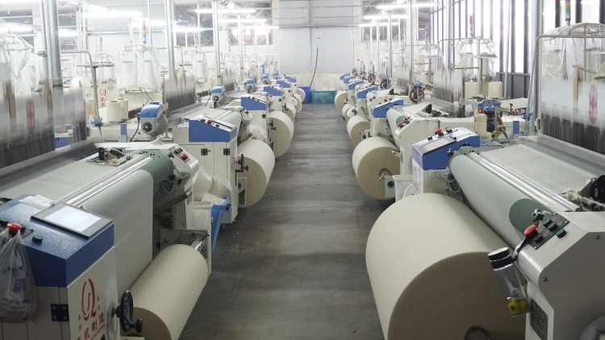

Precision engineering, built in Surat.
TECHVIN Machinery supplies Airjet and Waterjet weaving looms to India's textile industry — selected for performance, backed by parts and support on the ground.

Built around the mill, not the catalogue.
TECHVIN Machinery was founded in Surat — the heart of India's textile manufacturing belt — with one focus: supplying Airjet and Waterjet looms that perform under real mill conditions, not just on a specification sheet.
Every series in our range, from the high-speed YC920 to the heavy-duty JW408, was selected by working directly alongside textile producers to understand where machines fail and where they need to perform harder.
Today, TECHVIN supplies weaving machines and a full spare parts ecosystem to mills across India, backed by direct technical support and a parts catalogue built for fast turnaround.
Our Mission
To give Indian textile manufacturers access to weaving technology that keeps running — sourced for uptime, backed by parts and support that don't leave a mill waiting.
Three principles, no exceptions.
Uptime First
A loom that's down isn't saving anyone money. We select machines for reliability before we sell on spec-sheet numbers.
Suited to India's Mills
Voltage variance, dust, humidity, fibre types — our machines are tuned for the conditions they'll actually run in.
Parts You Can Get
A catalogued, stocked spare parts system means a breakdown is a delay, not a crisis.
Key milestones
Company Founded
TECHVIN Machinery established in Surat, Gujarat, with a focus on supplying Airjet looms.
Waterjet Line Added
Added the JW series of Waterjet looms to our range for synthetic and filament fabric production.
Ultra-Speed Series
Brought in YC920 and JW8200 — our highest-speed platforms to date, capable of 1000+ RPM production.
Full Parts Ecosystem
Completed a 72+ component spare parts catalogue spanning all eight machine series.
Specify the right loom for your line.
Send us your fabric type, width, and target output — we'll recommend the right TECHVIN series and quote spares.